Versionsstyring
Hvad er versionstyring?
Versionstyring er en metodisk tilgang, hvor man systematisk opstiller sine filer og mapper, med for eksempel navngivning og supplerende kommentarer til hvilke ændringerne man har fortaget sig i en hvis version af samme fil. Så man ligsom kan eksperimentere med mange forskellige ideer på sammetid uden egentligt at ændre på selve projekt(hovedforløbet).
VCS (Version Control System) kan understøtte versionsyring, idet at det holder styr på hvilke ændringer man har lavede i de forskellige versioner.
dette gøre det også nemmere at gå tilbage og frem i forskellige versioner. Hvis det nu skulle være der bliver lavede en fejl eller man har en ændring som skal implimenteres i hovedforløbet.
I alle typer it-projekter Udvikling af administrative systemer, apps, embeddede systemer, frameworks, libraries og komponenter, websites mm
Hvad er Git?
Git er en standard (protokol) for et versionsstyringssystem Git er et versionsstyringssystem.
Det er oprindeligt skrevet at Linus Thorvalds for, at holde styr på udviklingen af Linux efterhånden, som der kom flere med.
Du kan selv opsætte en Git-server.
Hvad er Github?
Det er en webplatform, der tillader dig at oprette Git-repositories(skyer). Hvor du kan lægge dine filer og mapper og lave versionstyring meget mere effektivt da det er en VCS. Og du behøver derfor ikke at installere en server selv.
Det har forskellige features bygget ind som giver bedre mulighed for samarbejde og projektstyring mv.Det er oprindligt set tænkt som et kodedelings-site, men er lidser langsomt blevet til et socialt medie. Det har givet virksomheder behov for at sætte det højt op på prioriteringslisten når det kommer til ansættelser. Faktisk til sådan en grad at man via samarbejde på Github i forskellige projekter kan lave et legit portfolio der kan give en et job og anerkendelse.
Kan bruges via kommandolinje eller desktopprogram.
Det giver mulighed til at finde inspiration og løsninger til egne projekter.
Det er et open-source system som betyder at Github er dem som holder styr på serverne. Derfor er der mulighed for at lave private repositories for eksempelvis virksomheder som vil have fuldkontrol over serveren.
Github + desktop guide: Oprettelse af repository
desktop
step 1
Gå op til "file" oppe i venstre hjørne. Derunder vil du så finde en mulighed som hedder "New repository". Den klikker du så på eller bruge genvejen CRTL + n.

step 2
Efter du har klikket på "New repository" kommer der et nyt vindue. Der skal du angive navnet på dit nye repository, eventuelt give en beskrivelse og du vil normalt allerede have en GitHub mappe som din "Local path", men du har også muligheden for at vælge et andet sted at gemme dit repository. VIGTIGT!: HUSK AT TJEKKE AF PÅ "Initialize with a README"
Derefter kan du så trykke på "Create repository".
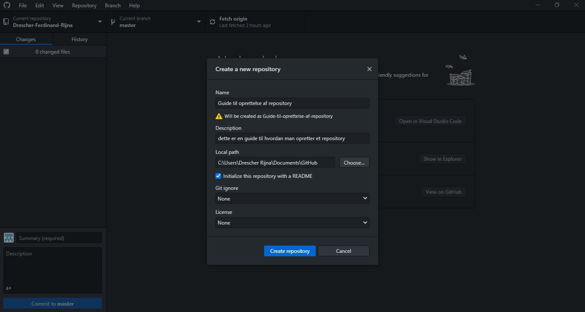step 3
Herefter vil du så se på midten af desktop applikationen, muligheden for at "Publish repository", som gøre at dit repository kan komme på Github.com
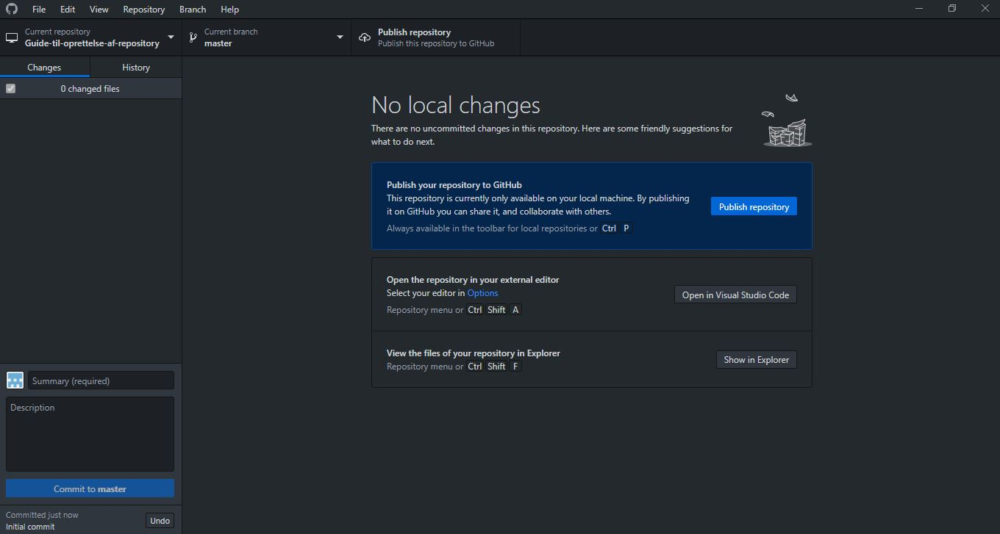step 4
Nu skal du bare give det et navn og en beskrivelse og derefter trykke på "Publish repository" for at få den på Github.com
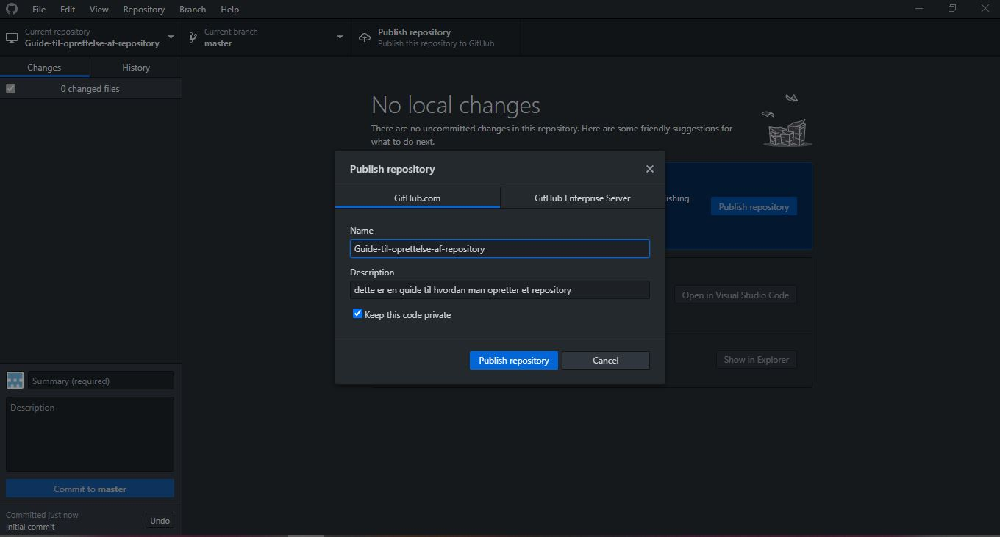Web
step 1
Du går op i højre hjørne, hvor du så vil se et plus-tegn ved siden af din profil. Den trykker du på og så vil der poppe en menu op, hvor du så klikker på "New repository"
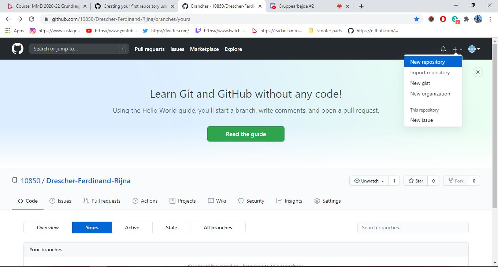step 2
Efter at du klikket på "New repository" burde du gerne komme ind i siden vist på billedet. Her skal du give dit repository et navn og eventuelt give den en beskrivelse. Derefter kan du så vælge om du vil gøre dit repository public eller private.
HUSK AT TJEKKE AF VED "add a README file"
Nu kan du så trykke på "Create repository". Hvor du efterfølgende vil blive ført tilabge til din profil og kan nu se dit nye repository
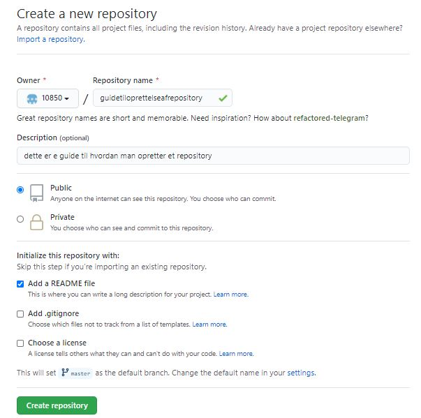hvordan der kan anvendes versionsstyring
I github er anvendelsen af versionsstyring hele formålet med servicen. Her under gælder der repositories, branches, commits, pull requests og merge.
Branches
Branches bruges når man gerne vil eksperimentere med sit website uden at ændringerne har indflydelse på ens hovedforløb/Master branch. Det er en rigtig god måde at have flere forskellige versioner af det samme website eller fil, som man så kan bruge til ens hovedforløb senere.
Hvordan man laver en ny branch
Step 1
Man går ind på sin repository og går under branches hvor der vil stå master by defeault, så kan man se sine andre branches man kan vælge at gå ind i.
Der er et tekst felt, som man kan bruge til at søge efter branches. Udover det kan man også lave nye branches ved at skrive det man vil kalde sin nye branch og trykker nede i bunden, hvor der står "Create branch:(navn du gav brancen) from 'master'". Du kan se hvordan knappen ser ud i det lille billede nedenfor det første billede.
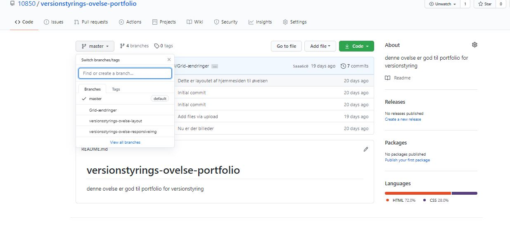 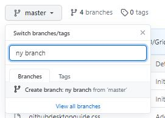Tillykke du har lavet en branch
Nu burde du se din nye branch, hvor du kan uploade nye filer uden de har indflydelse på dit hoved forløb.
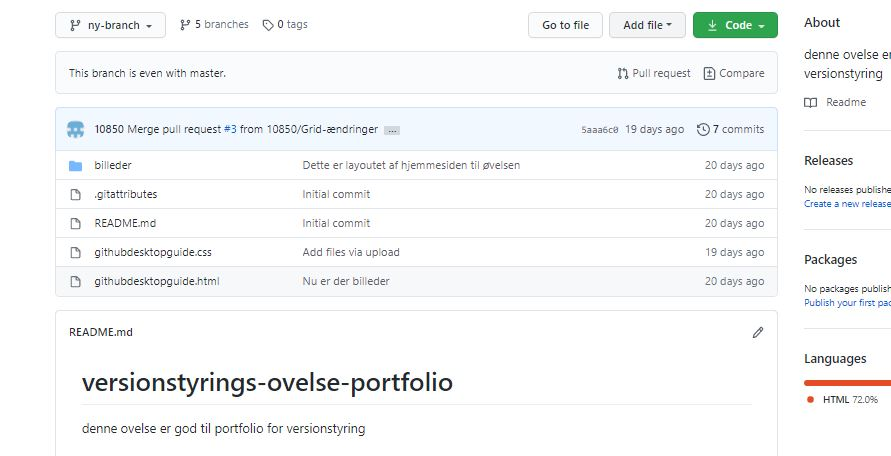For at indlægge nye filer eller ny versioner af en fil med nye ændringer, skal du lave en commit, som vi vil kigge på nedenfor.
Commits
Commits er ligsom at gemme ændringer i en fil i word. Forskellen er så at man har mulighed for at finde tilbage efterfølgende. Så det er ligsom en slagsmilepæl.
Hvordan man laver en commit
Step 1
Inde i din branch vil du oppe til højre se tre knapper, en af dem siger "add file". Den trykker du på og trykker "upload file", hvor du derefter vil blive ført til siden vist på billedet nedenfor.
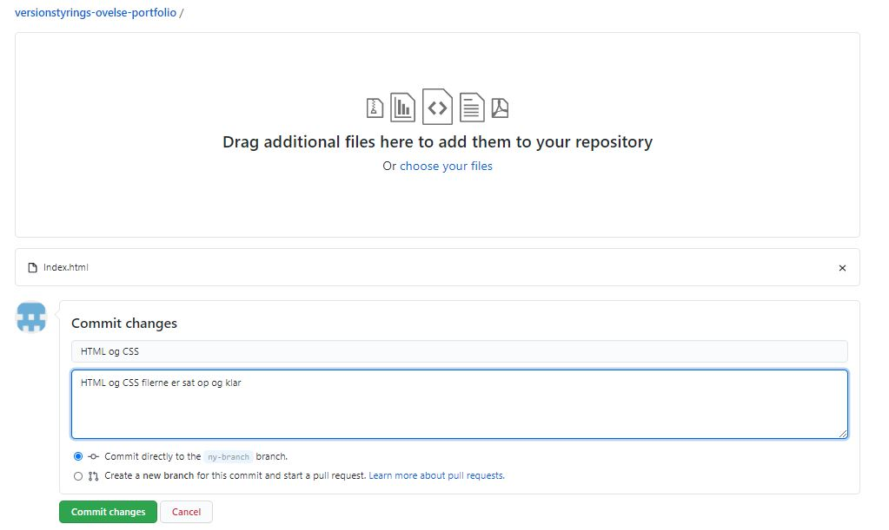Her kan du så trække dine filer eller mapper ind i boksen hvor man nedenfor boksen vil se sine filer blive uploadet.
Før du så trykker "commit changes" nede i bunden, skal du skrive en tittel til commiten samt en beskrivelse så det er nemt og overskueligt at finde rundt i dine forskellige commits du vil lave.
Når commiten er lavet, så har du lavet en branch med en version af din website, som du har mulighed for at merge med dit hovedforløb så ændringer kan ses på dit website. Det gøres ved brug af det man kalder pull request og merge.
Pull requests og merge
Pull requests er til når man vil merge en branch med sit hovedforløb. Man laver et forslag til en ny udgave til en anden branch, og så skal man acceptere de ændringer for at ændringerne fra en branch merges med en anden branch.
Det bruges typisk til at lave ændringer i sit hovedforløb/master branch, gennem sine andre branches med andre versioner af samme fil.
Hvordan man laver pull request og merge
Step 1
Når du går ind i en af dine branches, som ikke er dit hovedforløb, så vil du se en gul boks med en grøn knap, som siger "compare og pull request". Den trykker du på.
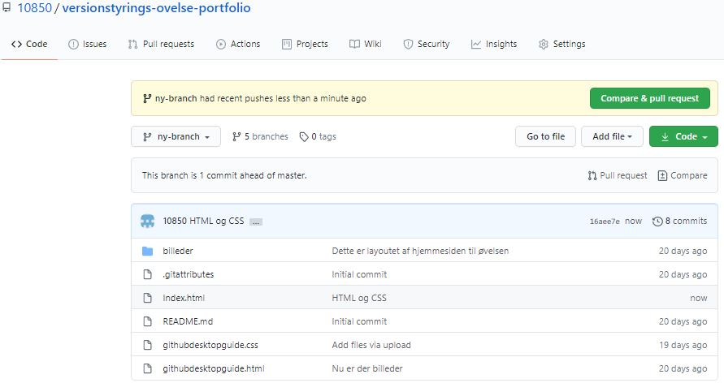Step 2
Nu burde du være på siden nedenfor med overskriften "Open pull request".
Her vil der automatisk være givet den samme titel og beskrivelse, som du gav din commit, men det kan ændres på hvis man har lyst. Man trykker så på knappen nede til højre der siger "Create pull request".
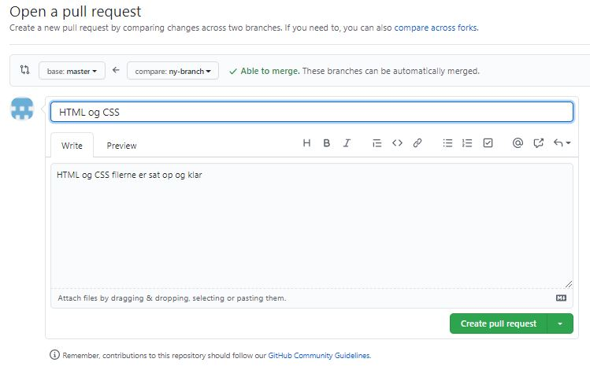Step 3
Efter du har lavet den pull request og merge, så kan man på Github desktop se de forskellige Diff'er der er lavede på dit hovedforløb. Diff er forskelle mellem commits.
De grønne områder med et plus er det nye der er added.
De røde områder er tekst/kode der er blevet slettet.
Resten som ses som neutralt er det som er uændret mellem commits.
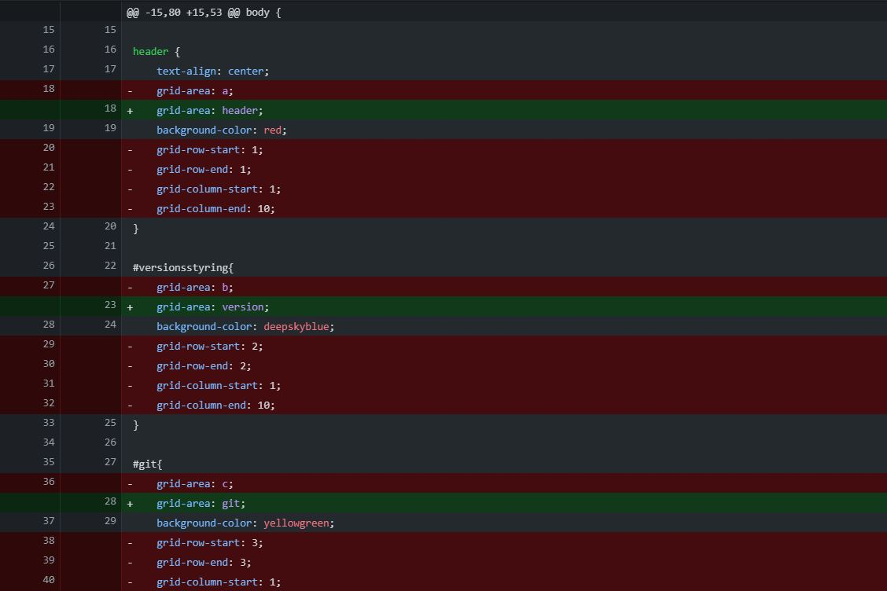Step 4
Nu skal du længere nede på den nye side du er blevet sendt til bekræfte at du vil merge din commit ind i dit hovedforløb ved at trykke på "merge pull request".

Og derefter trykke på knappen som siger "confirm merge" for at bekræfte din pull request og gøre den en del af dit hovedforløb eller branch som du har valgt at lave en pull request til.

Nu kan du bruge Github, som et godt værktøj til at versionstyrer dine projekter.